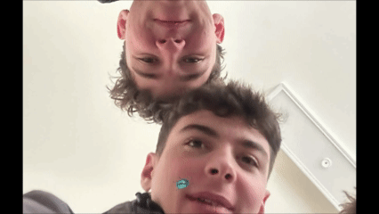
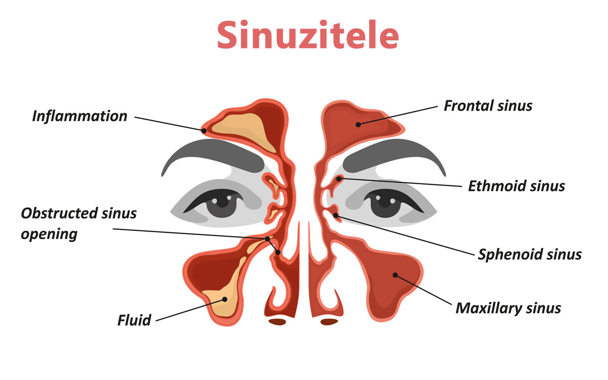
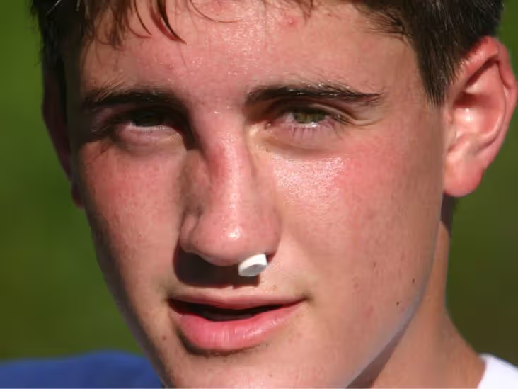
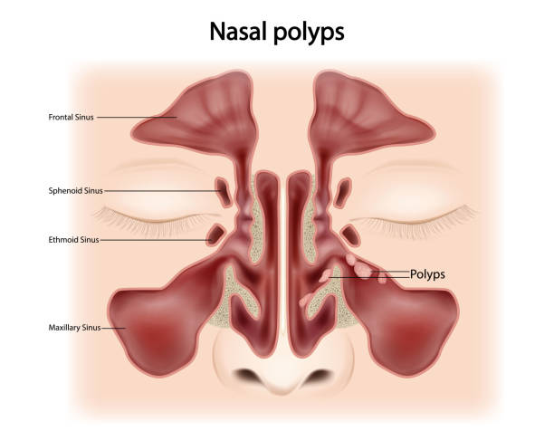
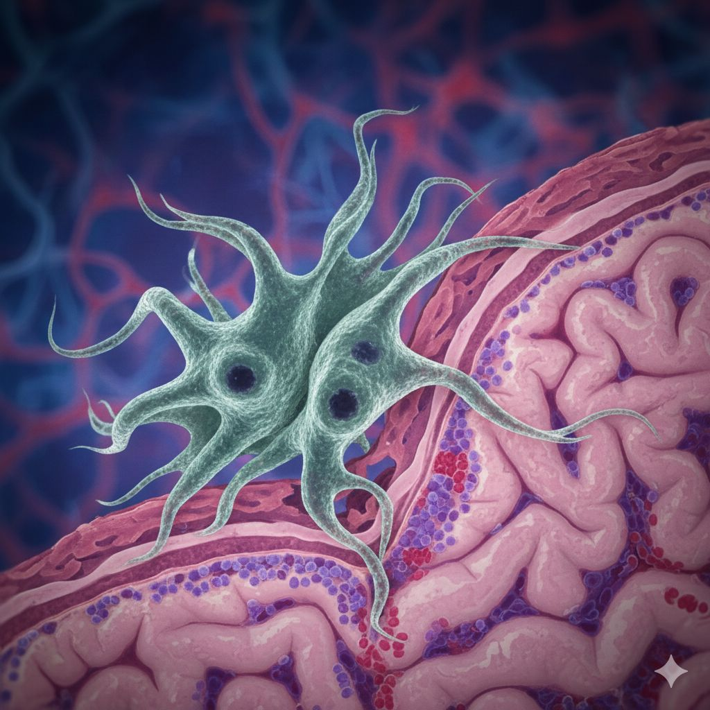

Introducere
Nasul este organul principal al sistemului respirator superior și are rol atât în respirație, cât și în simțul mirosului.
Anatomic și funcțional, nasul se împarte în două secțiuni principale:
Nasul este componenta de bază a sistemului respirator.

Structura Nasului
Partea exterioara
Nasul extern: format din structuri osoase și cartilaginoase acoperite de piele, are rol estetic și de protecție.
Cavitatea nazală: spațiul din interior, împărțit în două de septul nazal, căptușit cu o mucoasă bogat vascularizată.
Mirosul
Mirosul contribuie la percepția gustului. În absența funcției olfactive, gustul alimentelor este diminuat, ceea ce poate afecta apetitul și nutriția. Aceasta este evident în cazurile de anosmie. Receptorii olfactivi sunt capabili să detecteze mii de compuși chimici din aer. Această capacitate este importantă pentru percepția gustului și detectarea pericolelor, cum ar fi fumul sau scurgerile de gaze .

Afectiuni ale nasului


Rinitele
Rinita este inflamația mucoasei nazale.
Este de trei tipuri:
- Alergică -: cea mai comuna, declanșată de factori precum polenul, praful sau mucegaiul. Se manifestă prin strănut, secreții apoase, mâncărimi și congestie nazală.
- Infecțioasă -: apare in cadrul răcelilor comune, simptome asemănătoare cele ale rinitei alergice și uneori febră.
- Vasomotorie -: declanșată de schimbări de temperatură, stres sau fumat. Simptomele pot fi similare cu cele ale rinitei alergice.

Rinita Alergica
Sinuzita

Sinuzita este inflamația sinusurilor paranazale. Poate fi acută (de scurtă durată) sau cronică (persistă peste 12 săptămâni). De obicei, este precedată de o infecție respiratorie virală. În cazurile severe, poate fi necesară intervenția chirurgicală (sinusoplastie). Simptomele includ durere facială, presiune în zona sinusurilor, secreții nazale groase, obstrucție nazală și uneori febră.
Deviatie de sept

Septul nazal deviat este o anomalie anatomică ce afectează fluxul de aer prin cavitățile nazale. Poate fi congenital sau dobândit în urma unui traumatism. Dificultăți în respirația nazală, sforăit, uscăciune nazală și epistaxis(sângerarea nazală).
Polipii nazali
Polipii nazali sunt excrescențe benigne ale mucoasei nazale care apar frecvent în contextul unor inflamații cronice, cum ar fi rinita alergică sau sinuzita cronică. dar pot obstrucționa semnificativ respirația nazală.Simptomele includ congestie nazală persistentă, secreții apoase, pierderea mirosului (anosmie) și senzație de presiune facială
Tratamentul inițial este medicamentos, iar dacă răspunsul la tratament este insuficient, se recomandă excizia chirurgicală (polipectomie).

Naegleria Fowleri

Naegleria fowleri este unul dintre cele mai periculoase organisme microscopice descoperite vreodată. Aceasta este răspândită pe tot globul și trăiește în medii cu apă dulce caldă(lacuri, râuri, piscine, etc) și se hrănește în principal cu bacterii. Problema apare doar când apa contaminată intră accidental puternic pe nas, amiba urcând prin nervul olfactiv direct spre creier.
Aceasta distruge țesut cerebral foarte agresiv și se hrănește literalmente cu celule și resturi biologice. Simptomele apar de obicei la 1–12 zile după expunere și includ: febră, dureri mari de cap, greață, halucinații, etc. Mortalitatea este peste 97%.
Nasul influențează vocea. Sunetul produs de corzile vocale trece prin gât, gură și cavitatea nazală, iar forma acestor spații schimbă cum se aude vocea.